Chapter 3
Introduction to Triads and Seventh Chords
Tonal Harmony, 8th ed. – Kostka, Payne, Almén
Chords
Chords are the basic vocabulary of tonal harmony
Triads
- We will be building chords by stacking thirds
- Because tonal harmony is tertian: (meaning built of thirds)
- The fundamental tertian sonority is the triad
- Triad : a three-note chord
- Triads in tonal harmony consist of a fifth divided by a third note to create two stacked thirds.
- Stacking Major and minor thirds can give us four different triads
Triads
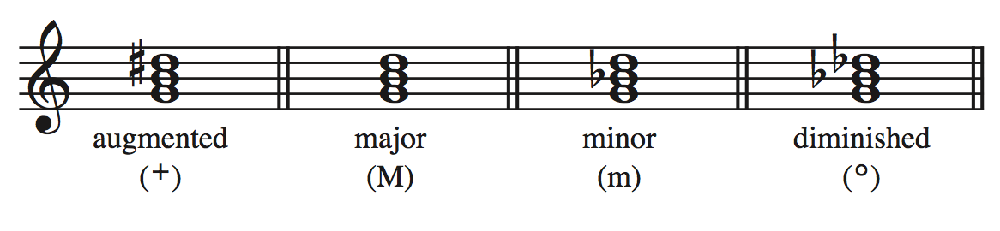 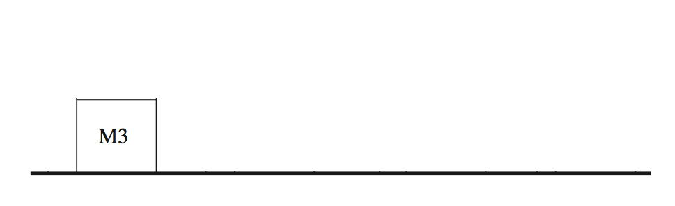 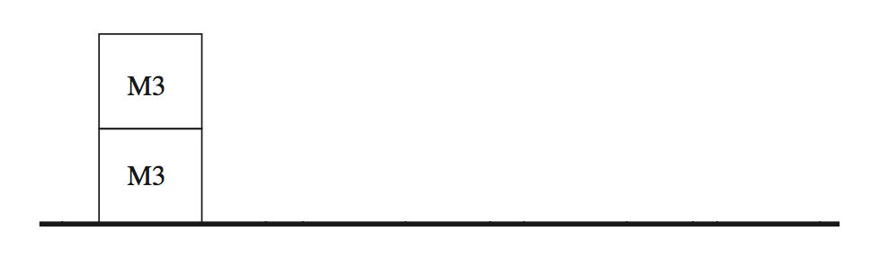 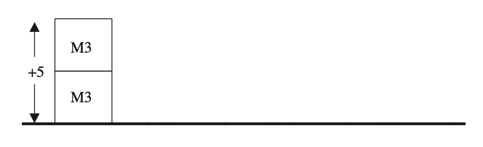 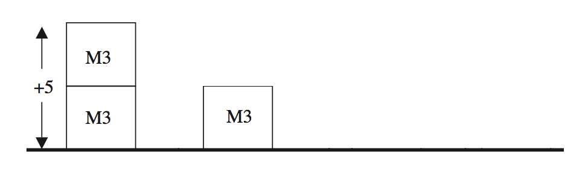 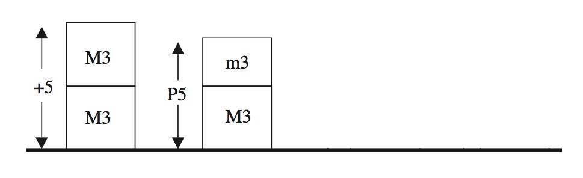
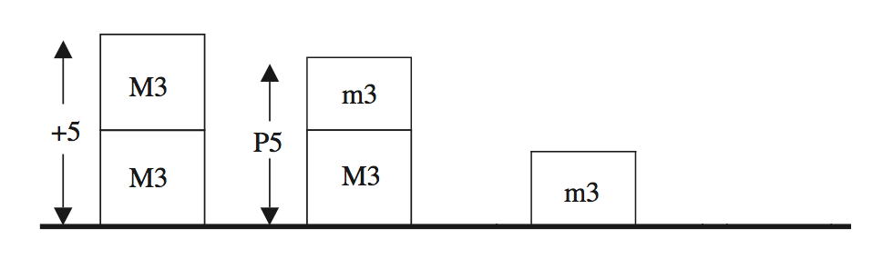
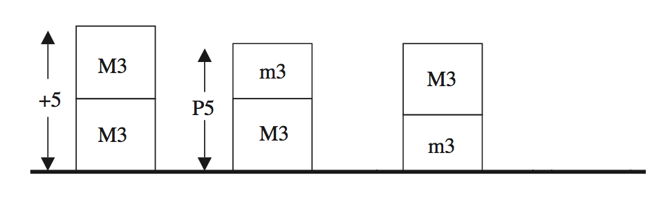
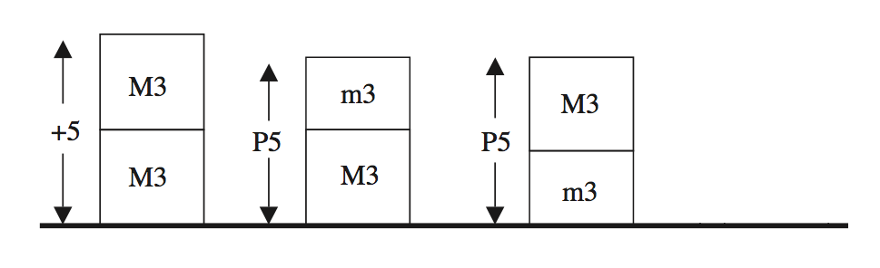
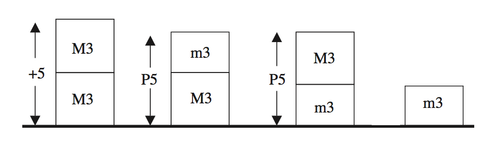
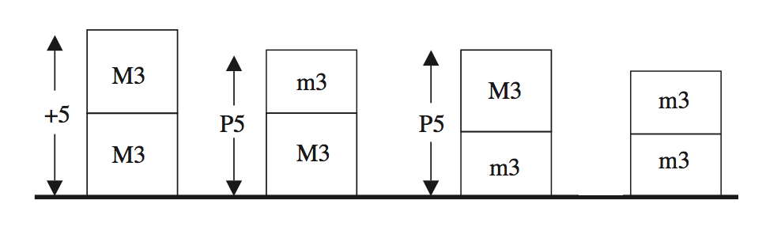
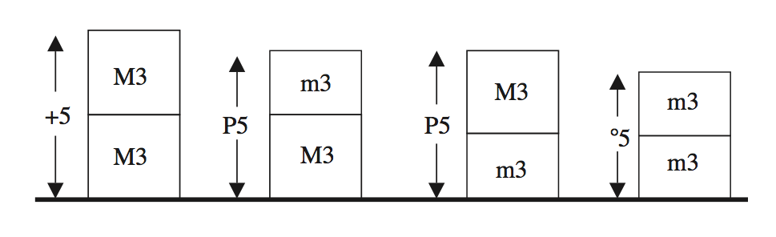
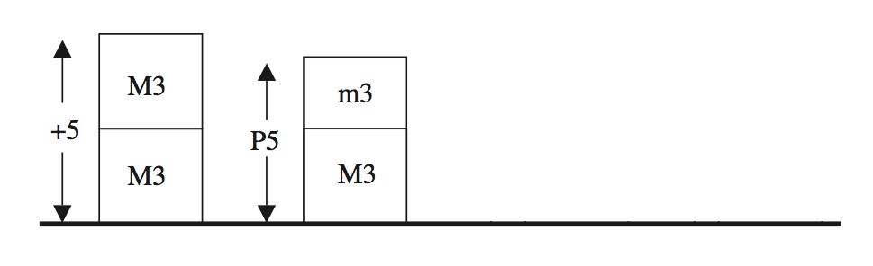
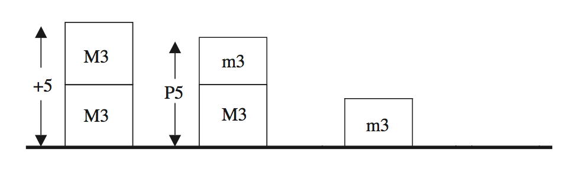
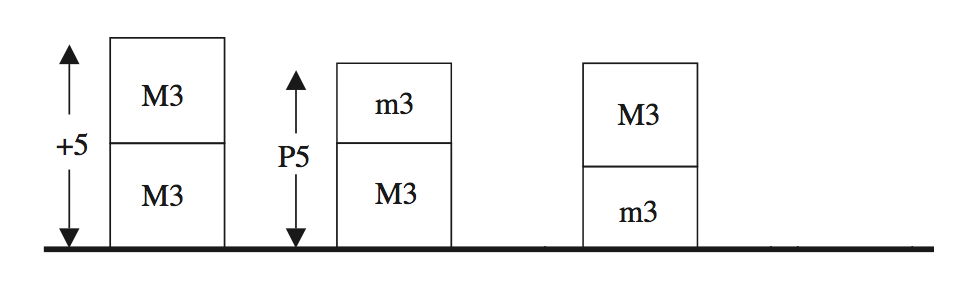
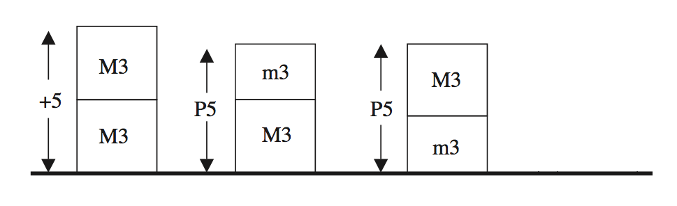
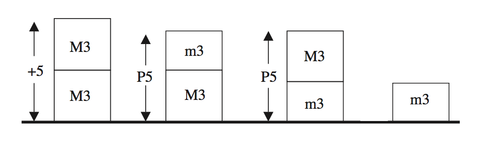
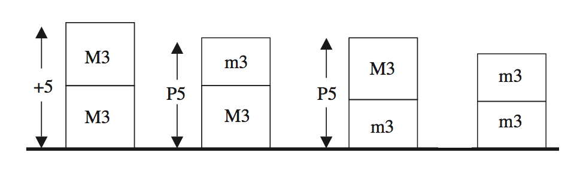
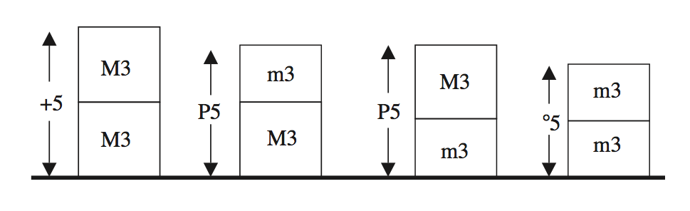
Seventh Chords
- Let’s extend a tertian triad by adding another third on top of the fifth of the third
- We get a four-note chord
- Chords of this sort are called seventh chords because the interval between this added note and the root is some sort of seventh.
- The interval of a seventh can come in 4 flavors
- Major
- minor
- Augmented
- diminished
- As you can imagine, there are many, many kinds of seventh chords. We will only need to know the five most common ones.
| Type of chord | major seventh | major-minor seventh | minor seventh | half-diminished seventh | (fully) diminished seventh |
| Notation |

|
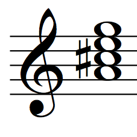 | 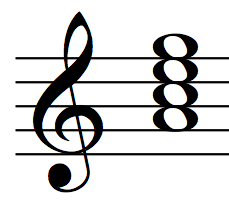 | 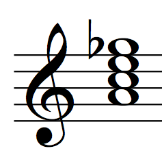 | 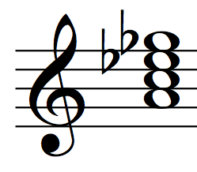 |
| Symbol | M7 | Mm7 | m7 | Ø7 | °7 |
| Construction |
major triad
+ major 7th |
major triad
+ minor 7th |
minor triad
+ minor 7th |
diminished triad
+ minor 7th |
diminished triad
+ diminished 7th |
Quick note: We won’t be doing any writing or composing with seventh chords for quite awhile, so they won’t be referenced much in the text until Chapter 14
However, we will still need to know them for analyzing music.
Inversion of Chords
- Up to now, we have been notating all chords with the root as the lowest tone.
- However, any member of the chord can appear as the lowest
- There are three bass positions:
- Root Position: the root is the lowest tone
- First Inversion: the third is the lowest tone
- Second Inversion: the fifth is the lowest tone
F major triad: 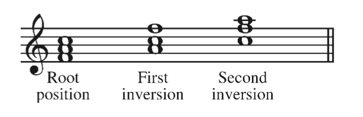
Doubling
Any notes of a triad can be duplicated, or doubled, in different octaves
F major triad in first inversion:

Inversion of Seventh Chords
Since there is an additional note in seventh chords, there is an additional inversion.

Lead Sheet Symbols
- Lead Sheet Symbols: used in jazz and most popular music styles to indicate chords to be played under a given melody.
- There are nine basic lead-sheet symbols you need to know
- 4 types of triads
- Major, minor, diminished, augmented
- 5 types of seventh chords
- Major 7th, Major-minor 7th (dominant), minor 7th, half-diminished 7th, (fully) diminished 7th.
Lead Sheet Symbols

Lead Sheet Symbols & Inversions
- To indicate an inversion with a lead sheet symbols, we write the lowest sounding note under the chord symbol (if it is not the root)
- For example, an Em chord with a G in the bass is in what inversion?
- 1st Inversion
- So we would write Em/G
Melba's Tune by Melba Liston
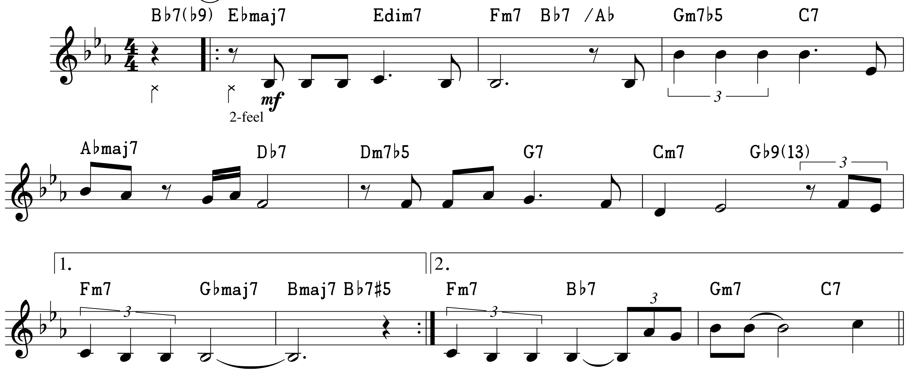Einfache Praeludien für Schüler Nr. 1 (1895)
by Clara Schumann

Figured Bass
- Figured Bass: a system derived in the Baroque era (ca. 1600-1750) to allow a keyboard player to realize chords from a single note base line
- The player would receive a part with a bass line and symbols by the notes that would indicate which harmonies to improvise over the bass line.
- It was also the responsibility of the player to fit in stylistically.
- The symbols basically show which intervals over the bass to play.
- We have adapted this system to show the bass position of chords
Figured Bass for a G Mm 7
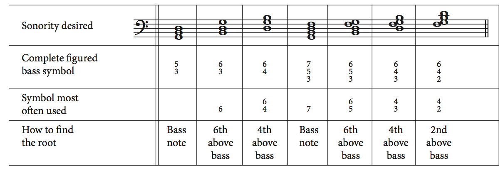This will be combined with Roman Numerals in Chapter 4
Figured Bass Summary